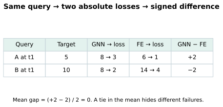
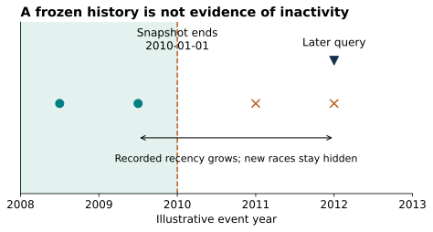
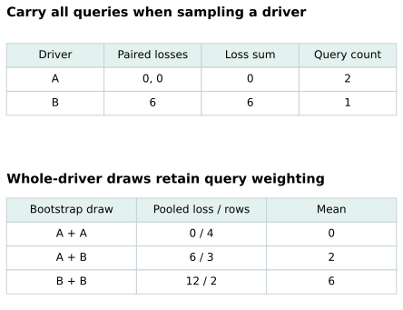
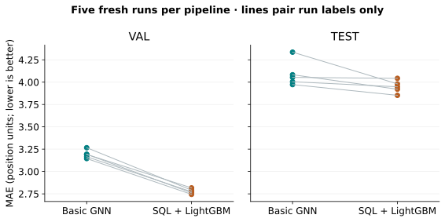
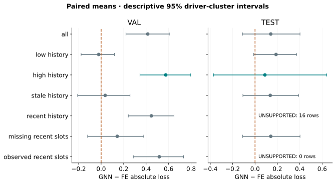

Year 4 · Quarter 2 · Lesson 137
Error analysis on REG: where does the GNN lose?
A model can lose on average for several different reasons. Find the rows where it loses before choosing a repair.
Your win: produce a query-aligned error report that names one validation-selected failure slice, measures its test behavior, and proposes an experiment that could falsify your explanation.
Student notebook · Executed reference · Solution · Reference card · Reproduction protocol
On narrow screens, scroll figures horizontally to keep their labels readable.
1 · From a correct score to a useful diagnosis¶
Lesson 136 established whether a score could be reconstructed. It left a practical question open: what should we change when the score is poor? Lesson 129 established a serious engineered-feature baseline. We now compare its errors with the basic relational GNN, on exactly the same questions.
Retrieve before reading: What identifies a temporal query? Which split may select a checkpoint? Does a missing feature prove that the underlying event never happened?
Check your retrieval
A query contains an entity and a cutoff. Validation selects a checkpoint. Missingness describes a representation; it can arise from a window, snapshot, join, or source recording process.A relational entity graph (REG) has database rows as nodes and primary–foreign-key links as edges. A graph neural network (GNN) learns by aggregating neighboring representations. Feature engineering (FE) explicitly constructs columns from the same database. Neither method is guaranteed to win on every query.
Read first: RelBench v1 §5.2, Table 7, and §6. The basic RDL regression baseline and expert-feature study answer related but distinct questions. Our GNN target is the basic Table 7 model; our FE replay uses the released driver-position SQL. This lesson's subgroup analysis is an original course extension.
2 · Pair the question before subtracting the errors¶
A residual is prediction minus target. Its sign shows overprediction or underprediction. Absolute loss removes that sign: a prediction of 8 against a target of 5 has loss 3. Mean absolute error (MAE) averages those losses over queries. Lower is better.
In plain terms. Ask how much more wrong the GNN was on the very same driver at the very same time.
For query i, define dᵢ = |gᵢ − yᵢ| − |fᵢ − yᵢ|, where g is the GNN prediction, f the FE prediction, and y the target. Positive d means the GNN lost. Negative d means it won. Average d equals GNN MAE minus FE MAE when both averages contain the same queries.
Worked example. Targets [5, 10], GNN predictions [8, 8], FE predictions [6, 14] give losses [3, 2] and [1, 4]. Paired differences are [+2, −2]. The mean gap is zero, although neither model ties on either query.


Predict before changing the control: if FE's second prediction moves from 14 to 10 while everything else stays fixed, which model wins on average?
An entity alone is not enough: the same driver appears at multiple dates. Require unique, complete (driver ID, cutoff) keys. Reject duplicates, missing rows, foreign keys and nonfinite predictions. Sort-by-position is not a join.
def paired_errors(keys, target, gnn_keys, gnn, fe_keys, fe):
"""Positive means the GNN has larger absolute error on the same query."""
canonical=[tuple(k) for k in keys]
y=np.asarray(target,dtype=float)
if y.ndim!=1 or len(y)!=len(canonical) or not len(y) or not np.isfinite(y).all():
raise ValueError('Require finite targets and complete query keys')
if len(set(canonical))!=len(canonical):raise ValueError('Duplicate truth keys')
aligned=[]
for supplied,values in [(gnn_keys,gnn),(fe_keys,fe)]:
supplied=[tuple(k) for k in supplied];v=np.asarray(values,dtype=float)
if v.ndim!=1 or len(v)!=len(supplied) or not np.isfinite(v).all():raise ValueError('Invalid predictions')
if len(set(supplied))!=len(supplied) or set(supplied)!=set(canonical):raise ValueError('Keys must be a bijection')
lookup=dict(zip(supplied,v));aligned.append(np.array([lookup[k] for k in canonical]))
return np.abs(aligned[0]-y)-np.abs(aligned[1]-y)
Lab task 1: implement key alignment and paired absolute losses. CHECK permutes prediction rows and inserts identity errors. Your function must preserve valid results and reject invalid comparisons.
3 · Define a slice without seeing its test errors¶
A slice is a subset of queries defined by an explicit rule. “GNN was wrong” is useful for inspecting examples, but cannot define a group you can identify before observing the target. Here we use feature-only rules:
| Quantity | Definition | Frozen rule |
|---|---|---|
| History | Number of recorded result rows strictly before cutoff, within the released snapshot | Low ≤ training-query median; high > median |
| Recency | Days from last recorded result to cutoff; infinity if none | Stale > 180 days; recent ≤ 180 |
| Recent-slot missingness | Fraction of 24 released SQL past-slot fields that are missing | Missing ≥ 0.5; observed < 0.5 |
The training median supplies a threshold without looking at validation/test errors. The fixed recency and missingness rules are declared before slice scoring. History is a recorded-result count, not sampled GNN degree. It does not measure whether a two-hop sampled batch actually exposed each row.


Both pipelines use the released database through 2010-01-01. A test query years later cannot obtain newer results from that snapshot. The SQL recent slots also use a short lookback. A missing slot therefore does not establish a driver had no recent race in the real world. The source audit reconstructs every engineered value independently.
Nomination rule. Average each query's loss difference over five fitted runs. On validation, retain slices with at least 30 queries and 10 distinct drivers. Nominate the supported slice with largest positive mean; break ties by name. If none is positive and supported, report no nominated failure slice. Save its name, thresholds, source hashes and prediction hashes before test slice analysis.
def nominate_slice(delta, entities, masks, split='val', min_rows=30, min_entities=10):
"""Choose largest positive supported mean on validation; report unsupported slices."""
if split!='val':raise ValueError('Only validation may nominate a slice')
d=np.asarray(delta,dtype=float);e=np.asarray(entities)
if d.ndim!=1 or e.shape!=d.shape or not np.isfinite(d).all():raise ValueError('Invalid aligned losses')
rows={}
for name,mask in sorted(masks.items()):
m=np.asarray(mask)
if m.dtype!=bool or m.shape!=d.shape:raise ValueError('Require one boolean per query')
n=int(m.sum());groups=len(np.unique(e[m]));supported=n>=min_rows and groups>=min_entities
rows[name]=dict(rows=n,entities=groups,supported=supported,mean=float(d[m].mean()) if n else None)
eligible=[name for name,r in rows.items() if r['supported'] and r['mean']>0]
selected=min(eligible,key=lambda name:(-rows[name]['mean'],name)) if eligible else None
return dict(selected=selected,slices=rows,split=split,min_rows=min_rows,min_entities=min_entities)
Lab task 2: implement the nomination rule. CHECK supplies a tiny high-error group and attempts nomination with split='test'. Unsupported groups must not win.
Scope check. This dataset's test split has appeared in earlier lessons. A validation-only operator prevents direct test selection here, but does not restore a pristine holdout. Treat the analysis as descriptive. Six overlapping slices are not six independent discoveries, and validation selection makes the nominated validation gap optimistic.
4 · Count drivers, not just rows¶
Ten queries for one driver share history. They do not provide ten independent drivers. A cluster bootstrap samples driver IDs with replacement and carries every query belonging to each sampled driver into the draw. Recompute the paired mean each time. The 2.5th and 97.5th percentiles of 2,000 draws form our descriptive 95% interval.
Worked example. Driver A has differences [0, 0]; driver B has [6]. The query-weighted mean is 2. Resampling two drivers yields A+A → 0, A+B → 2, or B+B → 6. Averaging driver means would instead give 3 for A+B; that would change the estimand—the quantity being estimated—from the average query to the average driver.


def cluster_interval(delta, entities, draws=2000, seed=137):
"""Resample whole drivers; retain row weighting inside every bootstrap draw."""
d=np.asarray(delta,dtype=float);e=np.asarray(entities)
if d.ndim!=1 or e.shape!=d.shape or not len(d) or not np.isfinite(d).all():raise ValueError('Invalid aligned losses')
if draws<2:raise ValueError('Need at least two draws')
groups,inverse=np.unique(e,return_inverse=True);n=len(groups)
if n<2:return dict(status='INSUFFICIENT_ENTITIES',mean=float(d.mean()),entities=n,low=None,high=None)
totals=np.bincount(inverse,weights=d);counts=np.bincount(inverse)
rng=np.random.default_rng(seed);samples=rng.integers(0,n,size=(draws,n))
estimates=totals[samples].sum(axis=1)/counts[samples].sum(axis=1)
lo,hi=np.quantile(estimates,[.025,.975])
return dict(status='CONDITIONAL_DESCRIPTIVE',mean=float(d.mean()),entities=n,low=float(lo),high=float(hi),draws=draws,seed=seed)
Lab task 3: implement whole-driver resampling while retaining query weights. CHECK uses repeated drivers and an insufficient-group case. Resampling individual rows would answer a different uncertainty question.
We first average losses across the five runs for each query. We do not average predictions before computing loss: that would evaluate an ensemble. These intervals condition on the five fitted models and fixed temporal split. Drivers also share races and dates, so driver clustering alone does not capture every dependence. It does not describe uncertainty across databases, alternative time windows, feature searches, or model retraining. We show seed variability separately.
5 · Fresh reproduction and measured failures¶
Held fixed: task archives, full train/validation/test query identities, target definition, five run IDs, and declared source protocols. Varied: the complete GNN and FE pipelines. Measured: MAE, paired loss gaps, supported slice counts and descriptive driver-cluster intervals.
The GNN runs ten complete epochs per seed, with validation checkpoint selection. FE runs ten search trials per seed with up to 2,000 trees and 50-round early stopping, then refits the chosen configuration. These are different search budgets and different preprocessing choices. Matching integer seed labels does not create common random numbers across these model families. Query pairing is the basis of the comparison.
Predict before revealing: will the highest-gap validation slice still contain enough test queries to support a conclusion?
| Split | GNN MAE ± seed SD | FE MAE ± seed SD | GNN − FE |
|---|---|---|---|
| val | 3.1920 ± 0.0460 | 2.7773 ± 0.0279 | +0.4147 |
| test | 4.0897 ± 0.1439 | 3.9489 ± 0.0705 | +0.1408 |
These use all five fresh runs and all held-out queries. The paired scorer uses the same archived target precision for both methods. No ensemble prediction or selected best seed is substituted.




The frozen nomination is high_history: more than 22 recorded prior results. Its validation gap is +0.5747, on 365 queries / 35 drivers. Test gives +0.0882, with descriptive 95% interval [-0.3701, +0.6411], on 359 queries / 19 drivers. The interval spans zero. The observed-recent-slots slice has 362 validation rows but zero test rows; it cannot validate a test-time failure claim.
Read the interval around zero as limited resolution under the declared resampling scheme, not proof of equal models. An empty slice is unsupported, not zero error. A large positive gap is evidence about this pipeline on this group; it does not identify a broken GNN mechanism.
6 · Turn an association into a testable repair¶
Suppose a slice with observed recent FE slots favors FE. One hypothesis is that explicit recent-result summaries are useful. Another is that feature selection, optimization, or the regression head differs. Inspecting that slice cannot choose among them.
A falsifiable next experiment: add the audited recent-result summaries to the GNN input while holding query keys, data cutoff, sampler, seeds, training budget and validation selection rule fixed. Nominate the intervention on validation and evaluate once on a new held-out temporal window where possible. If the gap does not narrow, reject the simple “missing explicit summaries explains the gap” story. That intervention is proposed, NOT_RUN here.
| Observation | Defensible statement | Additional evidence needed |
|---|---|---|
| Positive paired gap | This pipeline loses on these queries | Controlled intervention to explain why |
| Recent slots disappear at test | Feature support shifted under the snapshot | A matched rolling-history experiment |
| Few distinct drivers | Estimate rests on narrow entity support | More drivers or another temporal window |
| Source replay matches | Released computation was reconstructed | Historical generating-run identity |
The basic GNN uses table-specific row encoders, relative-time additions, two typed GraphSAGE layers and a seed-node regression head. FE uses SQL summaries and a LightGBM tree ensemble. This is an analysis lesson, not a new architecture lesson. The notebook nevertheless exposes the complete inherited model, trainer, SQL and search implementation, with separately gated full reruns.
7 · Reproduction contract and EXIT¶
Selected GNN paper target: RelBench v1 Table 7, rel-f1/driver-position, basic RDL. Five seeds, ten full epochs each.
| Split | Fresh mean | Paper target | Predeclared descriptive tolerance | Verdict |
|---|---|---|---|---|
| val | 3.192021 | 3.193 | ±0.2 MAE | CLOSE |
| test | 4.089695 | 4.022 | ±0.2 MAE | CLOSE |
CLOSE is a descriptive score check, not historical identity or statistical equivalence. FE completed all 50 search trials and five selected refits. Independent checks reconstruct every SQL feature, all saved tree predictions, and all GNN query identities.
The FE result is a full released-pipeline replay on pinned v1 archives. The old staging endpoint is unavailable; exact historical task scalar, search draws and models are not recovered. Therefore historical FE paper-score parity remains NOT_ESTABLISHED. Other tasks and whole-paper training remain NOT_RUN. The protocol records commands, runtime pins, deviations and budget; the analysis ledger records every slice.
Your EXIT: submit your three implementations and a short report that states the query key, sign convention, nominated slice, validation/test support, uncertainty unit, and one falsifiable repair. Explain why an empty test slice cannot confirm the nominated validation failure. State one source limitation that prevents an architecture-only conclusion.
Ask the agent follow-up questions about any unclear step, and paste your EXIT report for feedback. Author execution is evidence that the artifact runs, not evidence that you have mastered the diagnosis. Return in two days and reconstruct the paired-loss and cluster-resampling rules from memory. Lesson 138 will carry this discipline into a complete e-commerce task.
Carry this forward. Take your diagnosis checklist into Amazon: before explaining an error, establish what the task’s label actually observes. Continue to Lesson 138.